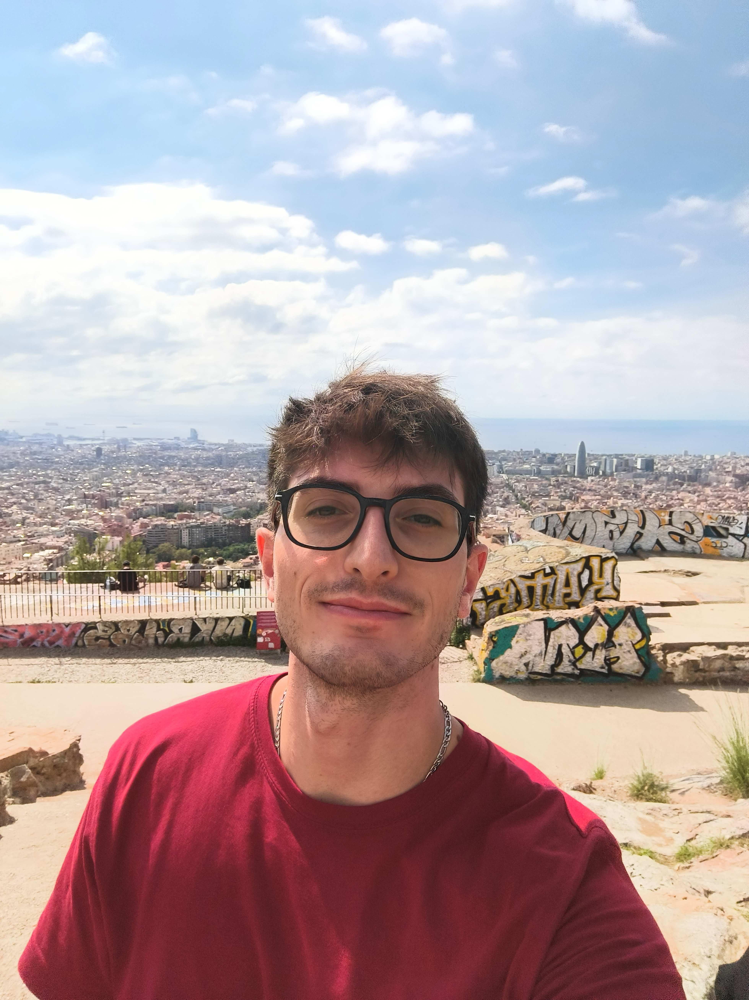
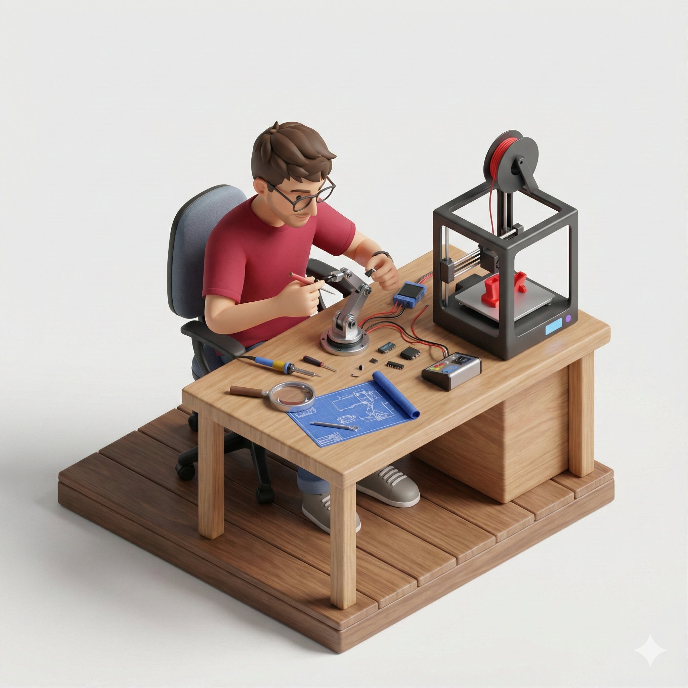
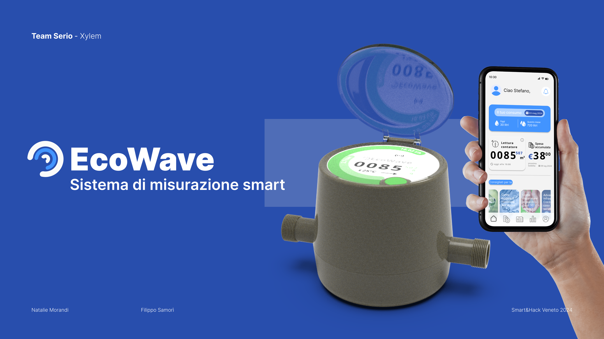
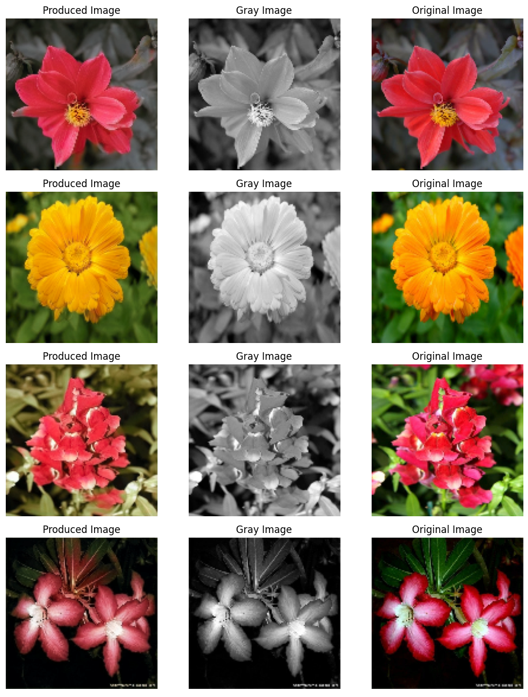
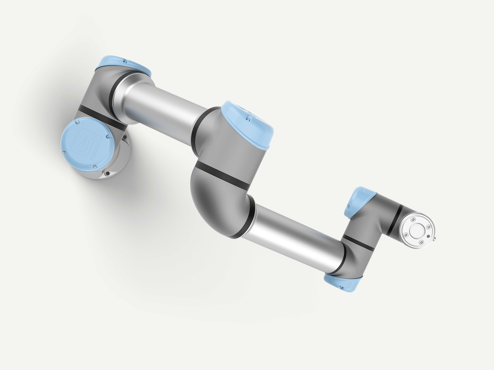
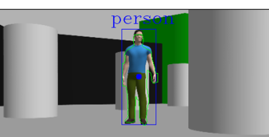

Filippo Samorì
Automation Engineer
Download CVAbout
My name is Filippo Samorì. I'm a Master’s student in Automation Engineering at the University of Bologna. I'm a passionate student with a strong interest in robotics and automation. I'm always looking for new opportunities to apply my knowledge and skills in real-world projects. I'm currently working as a Robotic Researcher Intern at Eurecat, Barcelona, Spain.
Education
Master’s degree in Automation Engineering
University of Bologna | 2023 - Present
Bachelor’s degree in Automation Engineering
University of Bologna | 2020 - 2023
110 cum laude - Thesis: Modelling and Simulation
of an
Excavator Arm
Hard Skills

Experience
Robotics Research Intern
Eurecat, Barcelona, Spain | Oct 2025 - Present
Working on a collaborative cell for human-robot interaction, enhanced with projected augmented reality. My role involves implementing a dynamic planner using the MoveIt Framework in ROS 2 for a robotic arm, as well as building a projection framework to visualize robot trajectories and additional information.
Librarian
Communication Science Library, Bologna, Italy | Jan 2024 - Dec 2024
Circulation desk, overseeing book check-outs, returns, and reservations.
R&D Intern
Romagnatech, Forlì, Italy | July 2019 - Aug 2019
Conducted research and contributed to the development of an electric scooter.
R&D Intern
Robotikos Mokykla, Vilnius, Lithuania | Oct 2018 - Nov 2018
Erasmus Internship. Developed a smart wardrobe where kids could store their laptops.
Projects

SLAM in a Crazyflie drone using ORB_SLAM3
Implemented a SLAM algorithm on a Crazyflie drone using ORB_SLAM3. The architecture consisted of a server running ROS 2 with ORB_SLAM3 and the drone transmitting data via Bluetooth and Wi-Fi, achieving real-time performance.
View Code
Smart&Hack Hackaton - Concept for a smart water meter
Project realized during a 24h hackaton together with Natalie Morandi. The idea was to create a smart water meter integrating IoT technology to monitor water usage and provide real-time data to the user, enabling also predictive maintenance for the water supply system.
Download Project
Colorization with Deep Learning
Implemented a colorization algorithm using TensorFlow. Designed and trained a Deep Neural Network based on a U-Net architecture to colorize grayscale images.
View Code
UR5 Digital Twin
Universal Robot 5 modelling and simulation using 20-sim. The model was developed using a modular architecture based on bond graphs. Implemented a control law to operate the robot and validate simulation behavior.
View Code
Human Detection and Localization
A project focused on detecting and localizing humans during robotic exploration. Used YOLOv11 for detection and an Extended Kalman Filter for localization.
View Code